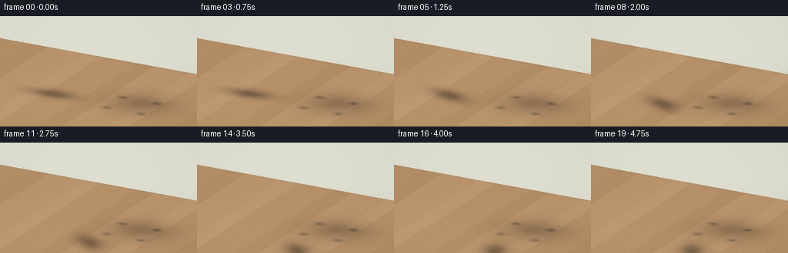
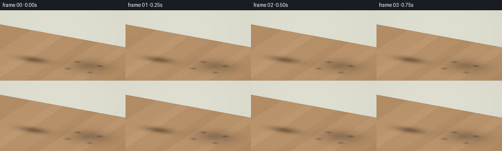

CODING AGENTS AS PIXEL WORLD MODELS
traex/GPT-6.1-Sol · dynamic_spatial_relationship_0006
点击播放 · 原生 RGB 像素
此结果可播放，但该运行尚未通过最终提交审核。页面展示不代表评测通过。
逐轮保存的候选
回放视频、检查图与代码变化。
每份候选均可单独播放。实际图片检查记录在下方工具轨迹中。
候选 01播放与检查图
点击播放 · 原生 RGB 像素

展开代码变化
--- 上一保存版本
+++ 本次保存版本
@@ -0,0 +1,346 @@
+"""A fully procedural, supersampled 3-D animation. No imported visual assets."""
+from pathlib import Path
+import math
+import numpy as np
+from PIL import Image
+from artifact_io import save
+
+ROOT = Path(__file__).resolve().parent
+W, H, SS = 256, 144, 3
+RW, RH = W*SS, H*SS
+CAM = np.array([3.4, -6.4, 3.6], float)
+TARGET = np.array([0.0, 0.0, .93])
+FORWARD = TARGET-CAM; FORWARD /= np.linalg.norm(FORWARD)
+RIGHT = np.cross(FORWARD, [0,0,1]); RIGHT /= np.linalg.norm(RIGHT)
+UP = np.cross(RIGHT, FORWARD)
+SCALE = 52.0*SS
+LIGHT = np.array([-3.,-4.,7.]); LIGHT /= np.linalg.norm(LIGHT)
+
+
+def project(v):
+ v = np.asarray(v)-TARGET
+ return np.stack([RW/2+SCALE*(v@RIGHT), RH/2-SCALE*(v@UP), -(v@FORWARD)], axis=-1)
+
+class Mesh:
+ def __init__(self): self.v=[]; self.n=[]; self.c=[]; self.t=[]
+ def add(self, v, n, c, t):
+ i=len(self.v)
+ self.v.extend(v); self.n.extend(n)
+ if np.asarray(c).ndim==1: c=np.tile(c,(len(v),1))
+ self.c.extend(c); self.t.extend(np.asarray(t)+i)
+ def box(self, center, size, color):
+ center=np.asarray(center); size=np.asarray(size)/2
+ for dim in range(3):
+ a,b=[i for i in range(3) if i!=dim]
+ for s in [-1,1]:
+ n=np.zeros(3); n[dim]=s
+ vs=[]
+ for j,k in [(-1,-1),(1,-1),(1,1),(-1,1)]:
+ q=np.zeros(3);q[dim]=s*size[dim];q[a]=j*size[a];q[b]=k*size[b]
+ vs.append(q+center)
+ self.add(vs,[n]*4,color,[[0,1,2],[0,2,3]])
+ def ellipsoid(self, center, radii, color, rotation=None, texture=None, nu=28, nv=18):
+ # latitude-longitude with smooth inverse-transpose normals
+ vs=[]; ns=[]; cs=[]; ts=[]
+ R=np.eye(3) if rotation is None else np.asarray(rotation)
+ center=np.asarray(center);radii=np.asarray(radii)
+ for j in range(nv+1):
+ phi=math.pi*j/nv
+ for i in range(nu+1):
+ th=2*math.pi*i/nu
+ u=np.array([math.sin(phi)*math.cos(th),math.sin(phi)*math.sin(th),math.cos(phi)])
+ p=u*radii
+ n=u/radii; n/=np.linalg.norm(n)
+ vs.append(center+R@p); ns.append(R@n)
+ cs.append(np.asarray(color) if texture is None else texture(p,u))
+ for j in range(nv):
+ for i in range(nu):
+ a=j*(nu+1)+i; b=a+nu+1
+ ts.extend([[a,b,a+1],[a+1,b,b+1]])
+ self.add(vs,ns,cs,ts)
+ def tube(self, points, radii, color, sides=12, texture=None):
+ ps=np.asarray(points);vs=[]; ns=[];cs=[]; ts=[]
+ for j,p in enumerate(ps):
+ d=ps[min(j+1,len(ps)-1)]-ps[max(0,j-1)];d/=np.linalg.norm(d)
+ ref=np.array([0,0,1.]) if abs(d[2])<.92 else np.array([0,1.,0])
+ a=np.cross(d,ref);a/=np.linalg.norm(a);b=np.cross(d,a)
+ for i in range(sides):
+ th=2*math.pi*i/sides;n=a*math.cos(th)+b*math.sin(th)
+ vs.append(p+n*radii[j]);ns.append(n)
+ cs.append(color if texture is None else texture(j/(len(ps)-1),n))
+ for j in range(len(ps)-1):
+ for i in range(sides):
+ a=j*sides+i;b=j*sides+(i+1)%sides
+ ts.extend([[a,a+sides,b],[b,a+sides,b+sides]])
+ self.add(vs,ns,cs,ts)
+ self.ellipsoid(ps[0], [radii[0]]*3, color, nu=12,nv=8)
+ self.ellipsoid(ps[-1], [radii[-1]]*3, color, nu=12,nv=8)
+ def cylinder(self, a,b,r,color,sides=12):
+ self.tube([a,b],[r,r],color,sides)
+ def triangle(self, pts,color):
+ pts=np.array(pts);n=np.cross(pts[1]-pts[0],pts[2]-pts[0]);n/=np.linalg.norm(n)
+ self.add(pts,[n]*3,color,[[0,1,2]])
+ def arrays(self):return np.array(self.v),np.array(self.n),np.array(self.c),np.array(self.t)
+
+
+def render(mesh, image, depth):
+ v,n,c,tr=mesh.arrays()
+ p=project(v)
+ # Smooth warm studio lighting; stable across all frames.
+ diffuse=np.maximum(n@LIGHT,0)
+ hemi=.80+.10*n[:,2]
+ lighting=(.55+ .47*diffuse)*hemi
+ col=np.clip(c*lighting[:,None]+np.array([7.,5.,3.]),0,255)
+ for ids in tr:
+ pts=p[ids]; colors=col[ids]
+ x0=max(0,int(np.floor(pts[:,0].min())));x1=min(RW-1,int(np.ceil(pts[:,0].max())))
+ y0=max(0,int(np.floor(pts[:,1].min())));y1=min(RH-1,int(np.ceil(pts[:,1].max())))
+ if x1<x0 or y1<y0:continue
+ ax,ay=pts[0,:2];bx,by=pts[1,:2];cx,cy=pts[2,:2]
+ den=(by-cy)*(ax-cx)+(cx-bx)*(ay-cy)
+ if abs(den)<1e-7:continue
+ yy,xx=np.mgrid[y0:y1+1,x0:x1+1];xx=xx+.5;yy=yy+.5
+ u=((by-cy)*(xx-cx)+(cx-bx)*(yy-cy))/den
+ v=((cy-ay)*(xx-cx)+(ax-cx)*(yy-cy))/den
+ w=1-u-v
+ zz=u*pts[0,2]+v*pts[1,2]+w*pts[2,2]
+ patchz=depth[y0:y1+1,x0:x1+1]
+ inside=(u>=-1e-7)&(v>=-1e-7)&(w>=-1e-7)&(zz<patchz)
+ if not np.any(inside):continue
+ values=u[...,None]*colors[0]+v[...,None]*colors[1]+w[...,None]*colors[2]
+ image[y0:y1+1,x0:x1+1][inside]=values[inside]
+ patchz[inside]=zz[inside]
+ return image,depth
+
+# The floor and back wall are analytic ray-plane intersections.
+yy,xx=np.mgrid[0:RH,0:RW]
+orig=TARGET[None,None,:]+((xx+.5-RW/2)/SCALE)[...,None]*RIGHT+((RH/2-yy-.5)/SCALE)[...,None]*UP
+floor_t=-orig[:,:,2]/FORWARD[2]
+FP=orig+floor_t[...,None]*FORWARD
+wall_t=(3.2-orig[:,:,1])/FORWARD[1]
+WP=orig+wall_t[...,None]*FORWARD
+isfloor=floor_t<wall_t
+FX,FY=FP[:,:,0],FP[:,:,1]
+wood_base=np.array([183.,145.,105.])
+plank=np.floor((FX+.12)/.50)
+wood_tone=4*np.sin(plank*7.31)+2*np.cos(plank*3.03)
+grain=1.6*np.sin(FY*44+2*np.sin(FY*5+FX*9))+1.0*np.sin(FY*113+FX*9)
+long_seam=np.minimum(np.mod(FX+.12,.5),.5-np.mod(FX+.12,.5))
+short_seam=np.minimum(np.mod(FY+np.mod(plank,3)*.74,2.3),2.3-np.mod(FY+np.mod(plank,3)*.74,2.3))
+seams=5*np.exp(-(long_seam/.009)**2)+3*np.exp(-(short_seam/.01)**2)
+floor_col=wood_base+ (wood_tone+grain-seams)[...,None]
+floor_col+= (5*np.exp(-((FX+2)**2+(FY+2)**2)/10))[...,None]
+wall=np.zeros((RH,RW,3))+np.array([221.,222.,208.])
+wall+=(WP[:,:,2]*1.7)[...,None]
+wall-= (2*np.sin(WP[:,:,0]*.25))[...,None]
+base_image=np.where(isfloor[...,None],floor_col,wall)
+base_depth=np.where(isfloor,-floor_t,-wall_t)
+
+WOOD=(131,78,42); WOOD_LIGHT=(151,94,50); TEAL=(53,111,110)
+static=Mesh()
+# Architectural baseboard on the far wall.
+static.box((0,3.16,.09),(14,.08,.18),(242,237,220))
+static.box((0,3.10,.18),(14,.13,.035),(248,242,225))
+# Artwork is kept small and behind the action.
+static.box((-2.4,3.11,1.81),(.82,.045,.95),(147,105,67))
+static.box((-2.4,3.079,1.81),(.73,.025,.86),(243,236,216))
+# Simple abstract botanical art, inset from the wooden frame.
+static.cylinder((-2.49,3.056,1.47),(-2.35,3.056,2.08),.009,(107,128,91))
+for z,s in [(1.61,-1),(1.72,1),(1.84,-1),(1.94,1)]:
+ static.ellipsoid((-2.42+s*.065,3.052,z),(.094,.010,.036),(142,156,119),nu=16,nv=8)
+# The chair faces toward negative world y, i.e. toward the camera.
+CHX,CHY=.72,.42
+for x in [-.43,.43]:
+ for y in [-.36,.36]:
+ a=np.array([CHX+x*1.15,CHY+y*1.16,.065]);b=np.array([CHX+x,CHY+y,.99])
+ static.tube([a,b],[.046,.064],WOOD_LIGHT,sides=10)
+# Rails and stretchers.
+static.box((CHX,CHY-.36,.77),(.94,.085,.17),WOOD)
+static.box((CHX,CHY+.36,.77),(.94,.085,.17),WOOD)
+for x in [-.43,.43]:
+ static.box((CHX+x,CHY,.77),(.085,.8,.17),WOOD_LIGHT)
+ static.cylinder((CHX+x,CHY-.35,.34),(CHX+x,CHY+.38,.34),.033,WOOD)
+static.cylinder((CHX-.46,CHY+.12,.34),(CHX+.46,CHY+.12,.34),.025,WOOD)
+# Bevelled seat created as nested rounded volumes and an upholstery cushion.
+static.box((CHX,CHY,.925),(1.04,.90,.09),WOOD_LIGHT)
+static.ellipsoid((CHX,CHY,.999),(.52,.449,.103),TEAL,nu=40,nv=18)
+static.box((CHX,CHY,.995),(.86,.70,.10),TEAL)
+# piping follows cushion perimeter
+for y in [-.375,.375]:
+ static.cylinder((CHX-.43,CHY+y,.982),(CHX+.43,CHY+y,.982),.012,(85,139,132))
+for x in [-.46,.46]:
+ static.cylinder((CHX+x,CHY-.33,.982),(CHX+x,CHY+.33,.982),.012,(85,139,132))
+# Back uprights and rounded top rail.
+for x in [-.44,.44]:
+ static.tube([(CHX+x,CHY+.36,.85),(CHX+x,CHY+.40,1.8),(CHX+x,CHY+.43,2.08)],[.054,.057,.06],WOOD_LIGHT,12)
+static.box((CHX,CHY+.418,1.98),(.99,.115,.20),WOOD_LIGHT)
+static.cylinder((CHX-.45,CHY+.414,2.08),(CHX+.45,CHY+.414,2.08),.042,WOOD_LIGHT)
+static.box((CHX,CHY+.384,1.21),(.84,.092,.10),WOOD)
+for x in [-.255,-.085,.085,.255]:
+ static.box((CHX+x,CHY+.405,1.58),(.089,.07,.67),(152,96,51))
+ static.box((CHX+x-.019,CHY+.365,1.58),(.012,.012,.60),(171,114,63))
+# visible small pegs in the frame
+for x in [-.425,.425]:
+ static.ellipsoid((CHX+x,CHY-.405,.78),(.013,.009,.013),(93,54,32),nu=12,nv=8)
+
+# Cat fur palette and local space model: local +x is forward.
+ORANGE=np.array([216.,139.,64.]); DARK=np.array([139.,80.,34.]); CREAM=(247,225,185)
+
+def cat_mesh(cx,cy,yaw,time,run,phase):
+ mesh=Mesh()
+ co,si=math.cos(yaw),math.sin(yaw)
+ R=np.array([[co,-si,0],[si,co,0],[0,0,1.]])
+ bounce=run*(.025+.038*math.sin(2*phase))
+ origin=np.array([cx,cy,bounce])
+ def pt(p):return origin+R@np.asarray(p)
+ def ell(c,r,col,tex=None,rot=None,nu=28,nv=18):
+ mesh.ellipsoid(pt(c),r,col,R if rot is None else R@rot,tex,nu,nv)
+ def tube(ps,rs,col,sides=12,texture=None):mesh.tube([pt(p) for p in ps],rs,col,sides,texture)
+ def cyl(a,b,r,col,sides=10):tube([a,b],[r,r],col,sides)
+ # Near-natural short-haired tabby striping painted into surface vertex colors.
+ def bodyfur(p,u):
+ stripe=(.5+.5*np.cos(37*p[0]+2.0*np.sin(u[2]*5)+.8*u[1]))**15
+ amount=.72*stripe*(.25+.75*max(u[2]+.55,0)/1.55)
+ base=ORANGE+np.array([4,1,-2])*u[2]
+ if u[2]<-.5:base=base*.40+np.array(CREAM)*.60
+ return base*(1-amount)+DARK*amount
+ def headfur(p,u):
+ stripe=(.5+.5*np.cos(37*p[1]+1.3*u[0]))**17
+ amt=.70*stripe*max(0,u[2])
+ return ORANGE*(1-amt)+DARK*amt
+ # Tail curls gently up behind the hindquarters, with dark tabby rings.
+ tail=[];radii=[]
+ for j in range(25):
+ s=j/24
+ tail.append([-.43-.47*s+.08*s*s, .04+.08*math.sin(s*3.1+time*2)*s, .51+.55*s-.13*s*s+run*.08*math.sin(phase+s*3)*s])
+ radii.append(.059*(1-.68*s)+.005)
+ def tailtex(t,n):
+ k=(.5+.5*math.cos(t*35))**12*.85
+ return ORANGE*(1-k)+DARK*k
+ tube(tail,radii,ORANGE,14,tailtex)
+ # Far legs first is not required by the depth buffer but maintains efficient locality.
+ for side in [1,-1]:
+ for front in [False,True]:
+ hx=.27 if front else -.30
+ sy=side*.145
+ ph=phase+(0 if front else math.pi)+ (math.pi if side==1 else 0)
+ swing=run*.17*math.sin(ph)
+ lift=run*.105*max(0,math.cos(ph))
+ hip=[hx,sy,.455]
+ knee=[hx +(-.055 if front else .065)+swing*.40,sy,.245+lift*.35]
+ ankle=[hx+swing,sy,.074+lift]
+ # Hips join the torso smoothly, paws are creamy rounded ovals.
+ ell(hip,[.114,.096,.14],ORANGE,nu=20,nv=12)
+ tube([hip,knee,ankle],[.068,.055,.039],ORANGE,12)
+ ell([ankle[0]+.028,sy-.002,ankle[2]-.018],[.084,.055,.043],CREAM,nu=20,nv=12)
+ for k in [-.014,.016]:
+ cyl([ankle[0]+.080,sy+k,ankle[2]-.026],[ankle[0]+.088,sy+k,ankle[2]-.005],.0035,(155,107,69),6)
+ # subtle dark bands above ankle
+ ell([knee[0],sy,knee[2]+.007],[.060,.058,.023],(170,99,40),nu=16,nv=8)
+ ell([-.06,0,.50],[.43,.185,.205],ORANGE,bodyfur,nu=40,nv=24)
+ ell([.245,0,.55],[.16,.157,.20],ORANGE,bodyfur)
+ # White bib under the jaw.
+ ell([.318,-.003,.509],[.075,.139,.140],CREAM,nu=24,nv=14)
+ headz=.698+run*.018*math.sin(phase)
+ headx=.376+run*.025
+ ell([headx,0,headz],[.183,.157,.162],ORANGE,headfur,nu=36,nv=24)
+ # Two pointed, solid ears with inset rose triangular interiors.
+ for side in [-1,1]:
+ basey=side*.105
+ ear=np.array([[headx-.094,basey-side*.053,headz+.077],
+ [headx+.041,basey-side*.042,headz+.089],
+ [headx-.014,basey+side*.015,headz+.274],
+ [headx-.073,basey+side*.062,headz+.090]])
+ for face in [[0,1,2],[1,3,2],[3,0,2],[0,3,1]]:
+ mesh.triangle([pt(ear[k]) for k in face],(213,137,65))
+ inner=[[headx+.023,basey-side*.026,headz+.114],
+ [headx-.002,basey+side*.010,headz+.236],
+ [headx-.048,basey+side*.043,headz+.119]]
+ mesh.triangle([pt(p) for p in inner],(215,150,131))
+ # Eyes lie on the forward hemisphere. The exaggerated visibility is intentional
+ # at 256 px, but the anatomy remains feline, not cartoon-human.
+ for side in [-1,1]:
+ ey=[headx+.127,side*.094,headz+.035]
+ ell(ey,[.035,.048,.044],(91,63,33),nu=24,nv=14)
+ eye=[ey[0]+.016,ey[1],ey[2]+.001]
+ ell(eye,[.028,.038,.035],(166,185,72),nu=24,nv=14)
+ ell([eye[0]+.024,eye[1],eye[2]],[.008,.010,.027],(24,29,20),nu=16,nv=12)
+ ell([eye[0]+.029,eye[1]-.008,eye[2]+.015],[.006,.007,.006],(255,249,222),nu=12,nv=8)
+ # White muzzle lobes and fine brow stripes.
+ ell([headx+.155,side*.053,headz-.057],[.062,.058,.046],CREAM,nu=24,nv=14)
+ for j in range(2):
+ cyl([headx+.104-j*.018,side*(.084+j*.018),headz+.088],
+ [headx+.082-j*.020,side*(.124+j*.008),headz+.071],.009,(137,79,33),8)
+ ell([headx+.149,0,headz-.101],[.050,.052,.026],CREAM,nu=22,nv=12)
+ nose=[headx+.211,0,headz-.042]
+ mesh.triangle([pt([nose[0],-.024,nose[2]+.013]),pt([nose[0],.024,nose[2]+.013]),pt([nose[0]+.008,0,nose[2]-.011])],(113,64,61))
+ cyl([headx+.212,0,headz-.049],[headx+.21,0,headz-.078],.004,(96,58,44),8)
+ for side in [-1,1]:
+ cyl([headx+.21,0,headz-.078],[headx+.193,side*.035,headz-.085],.003,(110,66,42),6)
+ for j in range(3):
+ # Delicate whiskers extend on either side of the muzzle.
+ a=[headx+.193,side*.057,headz-.057-j*.012]
+ b=[headx+.194+.028*j,side*(.23+.009*j),headz-.035-j*.032]
+ cyl(a,b,.0026,(235,229,202),6)
+ ell([headx+.202,side*(.043+j*.009),headz-.043-j*.013],[.0035]*3,(99,67,47),nu=8,nv=6)
+ return mesh
+
+
+def shadow_image(cx,cy,yaw):
+ im=base_image.copy()
+ shadow=np.zeros((RH,RW))
+ def gauss(x,y,sx,sy,amount):
+ nonlocal shadow
+ shadow+=amount*np.exp(-.5*((FX-x)/sx)**2-.5*((FY-y)/sy)**2)
+ # Chair casts a broad soft shadow toward the rear right, plus contact shadows.
+ gauss(CHX+.13,CHY+.18,.65,.56,.14)
+ gauss(CHX+.2,CHY+.29,.46,.34,.10)
+ for x in [-.49,.49]:
+ for y in [-.42,.42]:gauss(CHX+x,CHY+y,.085,.07,.22)
+ dx,dy=FX-cx,FY-cy
+ longitudinal=dx*math.cos(yaw)+dy*math.sin(yaw)
+ lateral=-dx*math.sin(yaw)+dy*math.cos(yaw)
+ shadow+=.29*np.exp(-.5*(longitudinal/.43)**2-.5*(lateral/.19)**2)
+ gauss(cx+.12,cy+.10,.40,.24,.07)
+ shadow=np.minimum(shadow,.47)*isfloor
+ im*=1-shadow[...,None]
+ return im
+
+
+def smoothstep(u):return u*u*(3-2*u)
+
+def pose(i):
+ t=i/4
+ if i<=3:return -1.46,.24,0.,0.,0.
+ if i>=15:
+ return .69,-1.20,math.radians(-66),0.,2*math.pi*3.5
+ u=(i-3)/12
+ # Ease out of the initial still pose; a modest arc takes the cat around the
+ # chair's near-left leg and unambiguously onto the foreground floor.
+ s=smoothstep(u)
+ x=-1.46+2.15*s
+ y=.24-1.44*s + .10*math.sin(math.pi*s)
+ yaw=-.40-.55*s
+ run=min(1,(i-3)/2,(15-i)/2)
+ phase=(i-3)*1.85
+ return x,y,yaw,run,phase
+
+
+def main():
+ frames=[]
+ for i in range(20):
+ cx,cy,yaw,run,phase=pose(i)
+ image=shadow_image(cx,cy,yaw)
+ depth=base_depth.copy()
+ render(static,image,depth)
+ render(cat_mesh(cx,cy,yaw,i/4,run,phase),image,depth)
+ # Very mild photographic vignette, not a border.
+ vignette=1-.055*((xx/RW-.5)**2+(yy/RH-.5)**2)
+ image=np.clip(image*vignette[...,None],0,255).astype(np.uint8)
+ frame=Image.fromarray(image,'RGB').resize((W,H),Image.Resampling.LANCZOS)
+ frames.append(np.asarray(frame))
+ print(f'Frame {i+1}/20',flush=True)
+ save(np.stack(frames),ROOT)
+ print('Saved RGB sequence and player.',flush=True)
+
+if __name__=='__main__':main()
候选 02播放与检查图
点击播放 · 原生 RGB 像素


展开代码变化
--- 上一保存版本
+++ 本次保存版本
@@ -13,13 +13,13 @@
FORWARD = TARGET-CAM; FORWARD /= np.linalg.norm(FORWARD)
RIGHT = np.cross(FORWARD, [0,0,1]); RIGHT /= np.linalg.norm(RIGHT)
UP = np.cross(RIGHT, FORWARD)
-SCALE = 52.0*SS
+SCALE = 47.0*SS
LIGHT = np.array([-3.,-4.,7.]); LIGHT /= np.linalg.norm(LIGHT)
def project(v):
v = np.asarray(v)-TARGET
- return np.stack([RW/2+SCALE*(v@RIGHT), RH/2-SCALE*(v@UP), -(v@FORWARD)], axis=-1)
+ return np.stack([RW/2+SCALE*(v@RIGHT), RH/2-SCALE*(v@UP), (v@FORWARD)], axis=-1)
class Mesh:
def __init__(self): self.v=[]; self.n=[]; self.c=[]; self.t=[]
@@ -134,7 +134,7 @@
wall+=(WP[:,:,2]*1.7)[...,None]
wall-= (2*np.sin(WP[:,:,0]*.25))[...,None]
base_image=np.where(isfloor[...,None],floor_col,wall)
-base_depth=np.where(isfloor,-floor_t,-wall_t)
+base_depth=np.where(isfloor,floor_t,wall_t)
WOOD=(131,78,42); WOOD_LIGHT=(151,94,50); TEAL=(53,111,110)
static=Mesh()
@@ -337,7 +337,7 @@
# Very mild photographic vignette, not a border.
vignette=1-.055*((xx/RW-.5)**2+(yy/RH-.5)**2)
image=np.clip(image*vignette[...,None],0,255).astype(np.uint8)
- frame=Image.fromarray(image,'RGB').resize((W,H),Image.Resampling.LANCZOS)
+ frame=Image.fromarray(image).resize((W,H),Image.Resampling.LANCZOS)
frames.append(np.asarray(frame))
print(f'Frame {i+1}/20',flush=True)
save(np.stack(frames),ROOT)
候选 03播放与检查图
可观测工具轨迹
实际执行的命令与返回图片。
命令 1exit 0
/bin/bash -lc 'ls -la && cat prompt.txt && cat GENERATION_RULES.md && cat task_spec.json'
命令 2exit 0
/bin/bash -lc "cat artifact_io.py && python - <<'PY' import importlib.util for m in ['numpy','PIL','scipy','imageio']: print(m, bool(importlib.util.find_spec(m))) PY"
命令 3exit 0
/bin/bash -lc "cat > generate.py <<'PY'
\"\"\"A fully procedural, supersampled 3-D animation. No imported visual assets.\"\"\"
from pathlib import Path
import math
import numpy as np
from PIL import Image
from artifact_io import save
ROOT = Path(__file__).resolve().parent
W, H, SS = 256, 144, 3
RW, RH = W*SS, H*SS
CAM = np.array([3.4, -6.4, 3.6], float)
TARGET = np.array([0.0, 0.0, .93])
FORWARD = TARGET-CAM; FORWARD /= np.linalg.norm(FORWARD)
RIGHT = np.cross(FORWARD, [0,0,1]); RIGHT /= np.linalg.norm(RIGHT)
UP = np.cross(RIGHT, FORWARD)
SCALE = 52.0*SS
LIGHT = np.array([-3.,-4.,7.]); LIGHT /= np.linalg.norm(LIGHT)
def project(v):
v = np.asarray(v)-TARGET
return np.stack([RW/2+SCALE*(v@RIGHT), RH/2-SCALE*(v@UP), -(v@FORWARD)], axis=-1)
class Mesh:
def __init__(self): self.v=[]; self.n=[]; self.c=[]; self.t=[]
def add(self, v, n, c, t):
i=len(self.v)
self.v.extend(v); self.n.extend(n)
if np.asarray(c).ndim==1: c=np.tile(c,(len(v),1))
self.c.extend(c); self.t.extend(np.asarray(t)+i)
def box(self, center, size, color):
center=np.asarray(center); size=np.asarray(size)/2
for dim in range(3):
a,b=[i for i in range(3) if i"'!=dim]
for s in [-1,1]:
n=np.zeros(3); n[dim]=s
vs=[]
for j,k in [(-1,-1),(1,-1),(1,1),(-1,1)]:
q=np.zeros(3);q[dim]=s*size[dim];q[a]=j*size[a];q[b]=k*size[b]
vs.append(q+center)
self.add(vs,[n]*4,color,[[0,1,2],[0,2,3]])
def ellipsoid(self, center, radii, color, rotation=None, texture=None, nu=28, nv=18):
# latitude-longitude with smooth inverse-transpose normals
vs=[]; ns=[]; cs=[]; ts=[]
R=np.eye(3) if rotation is None else np.asarray(rotation)
center=np.asarray(center);radii=np.asarray(radii)
for j in range(nv+1):
phi=math.pi*j/nv
for i in range(nu+1):
th=2*math.pi*i/nu
u=np.array([math.sin(phi)*math.cos(th),math.sin(phi)*math.sin(th),math.cos(phi)])
p=u*radii
n=u/radii; n/=np.linalg.norm(n)
vs.append(center+R@p); ns.append(R@n)
cs.append(np.asarray(color) if texture is None else texture(p,u))
for j in range(nv):
for i in range(nu):
a=j*(nu+1)+i; b=a+nu+1
ts.extend([[a,b,a+1],[a+1,b,b+1]])
self.add(vs,ns,cs,ts)
def tube(self, points, radii, color, sides=12, texture=None):
ps=np.asarray(points);vs=[]; ns=[];cs=[]; ts=[]
for j,p in enumerate(ps):
d=ps[min(j+1,len(ps)-1)]-ps[max(0,j-1)];d/=np.linalg.norm(d)
ref=np.array([0,0,1.]) if abs(d[2])<.92 else np.array([0,1.,0])
a=np.cross(d,ref);a/=np.linalg.norm(a);b=np.cross(d,a)
for i in range(sides):
th=2*math.pi*i/sides;n=a*math.cos(th)+b*math.sin(th)
vs.append(p+n*radii[j]);ns.append(n)
cs.append(color if texture is None else texture(j/(len(ps)-1),n))
for j in range(len(ps)-1):
for i in range(sides):
a=j*sides+i;b=j*sides+(i+1)%sides
ts.extend([[a,a+sides,b],[b,a+sides,b+sides]])
self.add(vs,ns,cs,ts)
self.ellipsoid(ps[0], [radii[0]]*3, color, nu=12,nv=8)
self.ellipsoid(ps[-1], [radii[-1]]*3, color, nu=12,nv=8)
def cylinder(self, a,b,r,color,sides=12):
self.tube([a,b],[r,r],color,sides)
def triangle(self, pts,color):
pts=np.array(pts);n=np.cross(pts[1]-pts[0],pts[2]-pts[0]);n/=np.linalg.norm(n)
self.add(pts,[n]*3,color,[[0,1,2]])
def arrays(self):return np.array(self.v),np.array(self.n),np.array(self.c),np.array(self.t)
def render(mesh, image, depth):
v,n,c,tr=mesh.arrays()
p=project(v)
# Smooth warm studio lighting; stable across all frames.
diffuse=np.maximum(n@LIGHT,0)
hemi=.80+.10*n[:,2]
lighting=(.55+ .47*diffuse)*hemi
col=np.clip(c*lighting[:,None]+np.array([7.,5.,3.]),0,255)
for ids in tr:
pts=p[ids]; colors=col[ids]
x0=max(0,int(np.floor(pts[:,0].min())));x1=min(RW-1,int(np.ceil(pts[:,0].max())))
y0=max(0,int(np.floor(pts[:,1].min())));y1=min(RH-1,int(np.ceil(pts[:,1].max())))
if x1<x0 or y1<y0:continue
ax,ay=pts[0,:2];bx,by=pts[1,:2];cx,cy=pts[2,:2]
den=(by-cy)*(ax-cx)+(cx-bx)*(ay-cy)
if abs(den)<1e-7:continue
yy,xx=np.mgrid[y0:y1+1,x0:x1+1];xx=xx+.5;yy=yy+.5
u=((by-cy)*(xx-cx)+(cx-bx)*(yy-cy))/den
v=((cy-ay)*(xx-cx)+(ax-cx)*(yy-cy))/den
w=1-u-v
zz=u*pts[0,2]+v*pts[1,2]+w*pts[2,2]
patchz=depth[y0:y1+1,x0:x1+1]
inside=(u>=-1e-7)&(v>=-1e-7)&(w>=-1e-7)&(zz<patchz)
if not np.any(inside):continue
values=u[...,None]*colors[0]+v[...,None]*colors[1]+w[...,None]*colors[2]
image[y0:y1+1,x0:x1+1][inside]=values[inside]
patchz[inside]=zz[inside]
return image,depth
# The floor and back wall are analytic ray-plane intersections.
yy,xx=np.mgrid[0:RH,0:RW]
orig=TARGET[None,None,:]+((xx+.5-RW/2)/SCALE)[...,None]*RIGHT+((RH/2-yy-.5)/SCALE)[...,None]*UP
floor_t=-orig[:,:,2]/FORWARD[2]
FP=orig+floor_t[...,None]*FORWARD
wall_t=(3.2-orig[:,:,1])/FORWARD[1]
WP=orig+wall_t[...,None]*FORWARD
isfloor=floor_t<wall_t
FX,FY=FP[:,:,0],FP[:,:,1]
wood_base=np.array([183.,145.,105.])
plank=np.floor((FX+.12)/.50)
wood_tone=4*np.sin(plank*7.31)+2*np.cos(plank*3.03)
grain=1.6*np.sin(FY*44+2*np.sin(FY*5+FX*9))+1.0*np.sin(FY*113+FX*9)
long_seam=np.minimum(np.mod(FX+.12,.5),.5-np.mod(FX+.12,.5))
short_seam=np.minimum(np.mod(FY+np.mod(plank,3)*.74,2.3),2.3-np.mod(FY+np.mod(plank,3)*.74,2.3))
seams=5*np.exp(-(long_seam/.009)**2)+3*np.exp(-(short_seam/.01)**2)
floor_col=wood_base+ (wood_tone+grain-seams)[...,None]
floor_col+= (5*np.exp(-((FX+2)**2+(FY+2)**2)/10))[...,None]
wall=np.zeros((RH,RW,3))+np.array([221.,222.,208.])
wall+=(WP[:,:,2]*1.7)[...,None]
wall-= (2*np.sin(WP[:,:,0]*.25))[...,None]
base_image=np.where(isfloor[...,None],floor_col,wall)
base_depth=np.where(isfloor,-floor_t,-wall_t)
WOOD=(131,78,42); WOOD_LIGHT=(151,94,50); TEAL=(53,111,110)
static=Mesh()
# Architectural baseboard on the far wall.
static.box((0,3.16,.09),(14,.08,.18),(242,237,220))
static.box((0,3.10,.18),(14,.13,.035),(248,242,225))
# Artwork is kept small and behind the action.
static.box((-2.4,3.11,1.81),(.82,.045,.95),(147,105,67))
static.box((-2.4,3.079,1.81),(.73,.025,.86),(243,236,216))
# Simple abstract botanical art, inset from the wooden frame.
static.cylinder((-2.49,3.056,1.47),(-2.35,3.056,2.08),.009,(107,128,91))
for z,s in [(1.61,-1),(1.72,1),(1.84,-1),(1.94,1)]:
static.ellipsoid((-2.42+s*.065,3.052,z),(.094,.010,.036),(142,156,119),nu=16,nv=8)
# The chair faces toward negative world y, i.e. toward the camera.
CHX,CHY=.72,.42
for x in [-.43,.43]:
for y in [-.36,.36]:
a=np.array([CHX+x*1.15,CHY+y*1.16,.065]);b=np.array([CHX+x,CHY+y,.99])
static.tube([a,b],[.046,.064],WOOD_LIGHT,sides=10)
# Rails and stretchers.
static.box((CHX,CHY-.36,.77),(.94,.085,.17),WOOD)
static.box((CHX,CHY+.36,.77),(.94,.085,.17),WOOD)
for x in [-.43,.43]:
static.box((CHX+x,CHY,.77),(.085,.8,.17),WOOD_LIGHT)
static.cylinder((CHX+x,CHY-.35,.34),(CHX+x,CHY+.38,.34),.033,WOOD)
static.cylinder((CHX-.46,CHY+.12,.34),(CHX+.46,CHY+.12,.34),.025,WOOD)
# Bevelled seat created as nested rounded volumes and an upholstery cushion.
static.box((CHX,CHY,.925),(1.04,.90,.09),WOOD_LIGHT)
static.ellipsoid((CHX,CHY,.999),(.52,.449,.103),TEAL,nu=40,nv=18)
static.box((CHX,CHY,.995),(.86,.70,.10),TEAL)
# piping follows cushion perimeter
for y in [-.375,.375]:
static.cylinder((CHX-.43,CHY+y,.982),(CHX+.43,CHY+y,.982),.012,(85,139,132))
for x in [-.46,.46]:
static.cylinder((CHX+x,CHY-.33,.982),(CHX+x,CHY+.33,.982),.012,(85,139,132))
# Back uprights and rounded top rail.
for x in [-.44,.44]:
static.tube([(CHX+x,CHY+.36,.85),(CHX+x,CHY+.40,1.8),(CHX+x,CHY+.43,2.08)],[.054,.057,.06],WOOD_LIGHT,12)
static.box((CHX,CHY+.418,1.98),(.99,.115,.20),WOOD_LIGHT)
static.cylinder((CHX-.45,CHY+.414,2.08),(CHX+.45,CHY+.414,2.08),.042,WOOD_LIGHT)
static.box((CHX,CHY+.384,1.21),(.84,.092,.10),WOOD)
for x in [-.255,-.085,.085,.255]:
static.box((CHX+x,CHY+.405,1.58),(.089,.07,.67),(152,96,51))
static.box((CHX+x-.019,CHY+.365,1.58),(.012,.012,.60),(171,114,63))
# visible small pegs in the frame
for x in [-.425,.425]:
static.ellipsoid((CHX+x,CHY-.405,.78),(.013,.009,.013),(93,54,32),nu=12,nv=8)
# Cat fur palette and local space model: local +x is forward.
ORANGE=np.array([216.,139.,64.]); DARK=np.array([139.,80.,34.]); CREAM=(247,225,185)
def cat_mesh(cx,cy,yaw,time,run,phase):
mesh=Mesh()
co,si=math.cos(yaw),math.sin(yaw)
R=np.array([[co,-si,0],[si,co,0],[0,0,1.]])
bounce=run*(.025+.038*math.sin(2*phase))
origin=np.array([cx,cy,bounce])
def pt(p):return origin+R@np.asarray(p)
def ell(c,r,col,tex=None,rot=None,nu=28,nv=18):
mesh.ellipsoid(pt(c),r,col,R if rot is None else R@rot,tex,nu,nv)
def tube(ps,rs,col,sides=12,texture=None):mesh.tube([pt(p) for p in ps],rs,col,sides,texture)
def cyl(a,b,r,col,sides=10):tube([a,b],[r,r],col,sides)
# Near-natural short-haired tabby striping painted into surface vertex colors.
def bodyfur(p,u):
stripe=(.5+.5*np.cos(37*p[0]+2.0*np.sin(u[2]*5)+.8*u[1]))**15
amount=.72*stripe*(.25+.75*max(u[2]+.55,0)/1.55)
base=ORANGE+np.array([4,1,-2])*u[2]
if u[2]<-.5:base=base*.40+np.array(CREAM)*.60
return base*(1-amount)+DARK*amount
def headfur(p,u):
stripe=(.5+.5*np.cos(37*p[1]+1.3*u[0]))**17
amt=.70*stripe*max(0,u[2])
return ORANGE*(1-amt)+DARK*amt
# Tail curls gently up behind the hindquarters, with dark tabby rings.
tail=[];radii=[]
for j in range(25):
s=j/24
tail.append([-.43-.47*s+.08*s*s, .04+.08*math.sin(s*3.1+time*2)*s, .51+.55*s-.13*s*s+run*.08*math.sin(phase+s*3)*s])
radii.append(.059*(1-.68*s)+.005)
def tailtex(t,n):
k=(.5+.5*math.cos(t*35))**12*.85
return ORANGE*(1-k)+DARK*k
tube(tail,radii,ORANGE,14,tailtex)
# Far legs first is not required by the depth buffer but maintains efficient locality.
for side in [1,-1]:
for front in [False,True]:
hx=.27 if front else -.30
sy=side*.145
ph=phase+(0 if front else math.pi)+ (math.pi if side==1 else 0)
swing=run*.17*math.sin(ph)
lift=run*.105*max(0,math.cos(ph))
hip=[hx,sy,.455]
knee=[hx +(-.055 if front else .065)+swing*.40,sy,.245+lift*.35]
ankle=[hx+swing,sy,.074+lift]
# Hips join the torso smoothly, paws are creamy rounded ovals.
ell(hip,[.114,.096,.14],ORANGE,nu=20,nv=12)
tube([hip,knee,ankle],[.068,.055,.039],ORANGE,12)
ell([ankle[0]+.028,sy-.002,ankle[2]-.018],[.084,.055,.043],CREAM,nu=20,nv=12)
for k in [-.014,.016]:
cyl([ankle[0]+.080,sy+k,ankle[2]-.026],[ankle[0]+.088,sy+k,ankle[2]-.005],.0035,(155,107,69),6)
# subtle dark bands above ankle
ell([knee[0],sy,knee[2]+.007],[.060,.058,.023],(170,99,40),nu=16,nv=8)
ell([-.06,0,.50],[.43,.185,.205],ORANGE,bodyfur,nu=40,nv=24)
ell([.245,0,.55],[.16,.157,.20],ORANGE,bodyfur)
# White bib under the jaw.
ell([.318,-.003,.509],[.075,.139,.140],CREAM,nu=24,nv=14)
headz=.698+run*.018*math.sin(phase)
headx=.376+run*.025
ell([headx,0,headz],[.183,.157,.162],ORANGE,headfur,nu=36,nv=24)
# Two pointed, solid ears with inset rose triangular interiors.
for side in [-1,1]:
basey=side*.105
ear=np.array([[headx-.094,basey-side*.053,headz+.077],
[headx+.041,basey-side*.042,headz+.089],
[headx-.014,basey+side*.015,headz+.274],
[headx-.073,basey+side*.062,headz+.090]])
for face in [[0,1,2],[1,3,2],[3,0,2],[0,3,1]]:
mesh.triangle([pt(ear[k]) for k in face],(213,137,65))
inner=[[headx+.023,basey-side*.026,headz+.114],
[headx-.002,basey+side*.010,headz+.236],
[headx-.048,basey+side*.043,headz+.119]]
mesh.triangle([pt(p) for p in inner],(215,150,131))
# Eyes lie on the forward hemisphere. The exaggerated visibility is intentional
# at 256 px, but the anatomy remains feline, not cartoon-human.
for side in [-1,1]:
ey=[headx+.127,side*.094,headz+.035]
ell(ey,[.035,.048,.044],(91,63,33),nu=24,nv=14)
eye=[ey[0]+.016,ey[1],ey[2]+.001]
ell(eye,[.028,.038,.035],(166,185,72),nu=24,nv=14)
ell([eye[0]+.024,eye[1],eye[2]],[.008,.010,.027],(24,29,20),nu=16,nv=12)
ell([eye[0]+.029,eye[1]-.008,eye[2]+.015],[.006,.007,.006],(255,249,222),nu=12,nv=8)
# White muzzle lobes and fine brow stripes.
ell([headx+.155,side*.053,headz-.057],[.062,.058,.046],CREAM,nu=24,nv=14)
for j in range(2):
cyl([headx+.104-j*.018,side*(.084+j*.018),headz+.088],
[headx+.082-j*.020,side*(.124+j*.008),headz+.071],.009,(137,79,33),8)
ell([headx+.149,0,headz-.101],[.050,.052,.026],CREAM,nu=22,nv=12)
nose=[headx+.211,0,headz-.042]
mesh.triangle([pt([nose[0],-.024,nose[2]+.013]),pt([nose[0],.024,nose[2]+.013]),pt([nose[0]+.008,0,nose[2]-.011])],(113,64,61))
cyl([headx+.212,0,headz-.049],[headx+.21,0,headz-.078],.004,(96,58,44),8)
for side in [-1,1]:
cyl([headx+.21,0,headz-.078],[headx+.193,side*.035,headz-.085],.003,(110,66,42),6)
for j in range(3):
# Delicate whiskers extend on either side of the muzzle.
a=[headx+.193,side*.057,headz-.057-j*.012]
b=[headx+.194+.028*j,side*(.23+.009*j),headz-.035-j*.032]
cyl(a,b,.0026,(235,229,202),6)
ell([headx+.202,side*(.043+j*.009),headz-.043-j*.013],[.0035]*3,(99,67,47),nu=8,nv=6)
return mesh
def shadow_image(cx,cy,yaw):
im=base_image.copy()
shadow=np.zeros((RH,RW))
def gauss(x,y,sx,sy,amount):
nonlocal shadow
shadow+=amount*np.exp(-.5*((FX-x)/sx)**2-.5*((FY-y)/sy)**2)
# Chair casts a broad soft shadow toward the rear right, plus contact shadows.
gauss(CHX+.13,CHY+.18,.65,.56,.14)
gauss(CHX+.2,CHY+.29,.46,.34,.10)
for x in [-.49,.49]:
for y in [-.42,.42]:gauss(CHX+x,CHY+y,.085,.07,.22)
dx,dy=FX-cx,FY-cy
longitudinal=dx*math.cos(yaw)+dy*math.sin(yaw)
lateral=-dx*math.sin(yaw)+dy*math.cos(yaw)
shadow+=.29*np.exp(-.5*(longitudinal/.43)**2-.5*(lateral/.19)**2)
gauss(cx+.12,cy+.10,.40,.24,.07)
shadow=np.minimum(shadow,.47)*isfloor
im*=1-shadow[...,None]
return im
def smoothstep(u):return u*u*(3-2*u)
def pose(i):
t=i/4
if i<=3:return -1.46,.24,0.,0.,0.
if i>=15:
return .69,-1.20,math.radians(-66),0.,2*math.pi*3.5
u=(i-3)/12
# Ease out of the initial still pose; a modest arc takes the cat around the
# chair'"'s near-left leg and unambiguously onto the foreground floor.
s=smoothstep(u)
x=-1.46+2.15*s
y=.24-1.44*s + .10*math.sin(math.pi*s)
yaw=-.40-.55*s
run=min(1,(i-3)/2,(15-i)/2)
phase=(i-3)*1.85
return x,y,yaw,run,phase
def main():
frames=[]
for i in range(20):
cx,cy,yaw,run,phase=pose(i)
image=shadow_image(cx,cy,yaw)
depth=base_depth.copy()
render(static,image,depth)
render(cat_mesh(cx,cy,yaw,i/4,run,phase),image,depth)
# Very mild photographic vignette, not a border.
vignette=1-.055*((xx/RW-.5)**2+(yy/RH-.5)**2)
image=np.clip(image*vignette[...,None],0,255).astype(np.uint8)
frame=Image.fromarray(image,'RGB').resize((W,H),Image.Resampling.LANCZOS)
frames.append(np.asarray(frame))
print(f'Frame {i+1}/20',flush=True)
save(np.stack(frames),ROOT)
print('Saved RGB sequence and player.',flush=True)
if __name__=='__main__':main()
PY
python generate.py"命令 4exit 0
/bin/bash -lc "python - <<'PY'
p='generate.py'
s=open(p).read().replace('SCALE = 52.0*SS','SCALE = 47.0*SS').replace('-(v@FORWARD)', '(v@FORWARD)').replace('np.where(isfloor,-floor_t,-wall_t)','np.where(isfloor,floor_t,wall_t)').replace(\"Image.fromarray(image,'RGB')\",\"Image.fromarray(image)\")
open(p,'w').write(s)
PY
python generate.py"保存候选 3 份；完成命令 4 次；可验证图片返回 0 张。原始 API 响应与完整日志保留在本地。